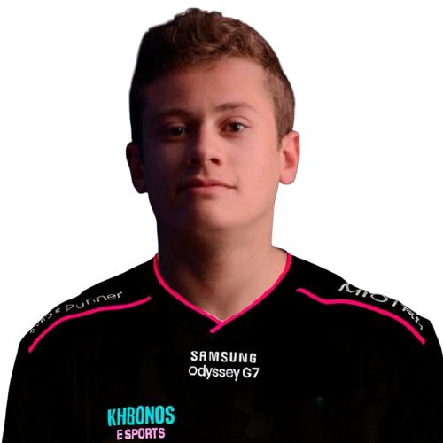
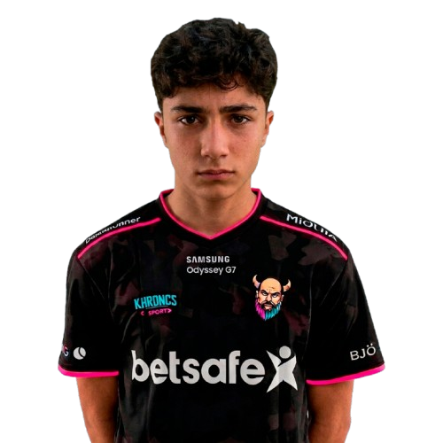

PLAYER
IGL / PLAYER
PETERSON
Um dos integrantes da nova geração Khronos. Atua como IGL dentro do servidor, liderando a equipe e ajudando a construir a identidade competitiva da Academy.
FUNÇÃO
IGL / PLAYER
Todo grande jogador começa com uma primeira partida. A Khronos Academy nasceu para encontrar novos talentos, ensinar os fundamentos do competitivo e transformar vontade de jogar em evolução de verdade.
Mais do que jogar. Aprender, evoluir e competir.
Antes de existir um grande clutch, uma mira precisa ser treinada. Antes de um troféu, existe uma primeira oportunidade.
A Khronos Academy foi criada para dar espaço a jovens jogadores que querem descobrir até onde podem chegar. Aqui, o foco não está apenas no placar: comunicação, disciplina, trabalho em equipe, leitura de jogo e respeito fazem parte da evolução.
Cada integrante começa de um ponto diferente. O objetivo é construir uma base, acompanhar o desenvolvimento e preparar a próxima geração para representar a Khronos dentro dos servidores.
2 integrantes • 3 vagas disponíveis

PLAYERUm dos integrantes da nova geração Khronos. Atua como IGL dentro do servidor, liderando a equipe e ajudando a construir a identidade competitiva da Academy.

PLAYERUm dos primeiros talentos da nova geração Khronos. Parte do projeto que começa a construir a história da Academy.
Um espaço reservado para quem quer começar sua jornada competitiva.
Um espaço reservado para quem quer aprender, evoluir e jogar em equipe.
A última vaga da formação atual. O próximo capítulo ainda está em aberto.
A Khronos Academy ainda está sendo formada. Talvez o próximo nome da equipe esteja entre os próximos jogadores a entrar no servidor.